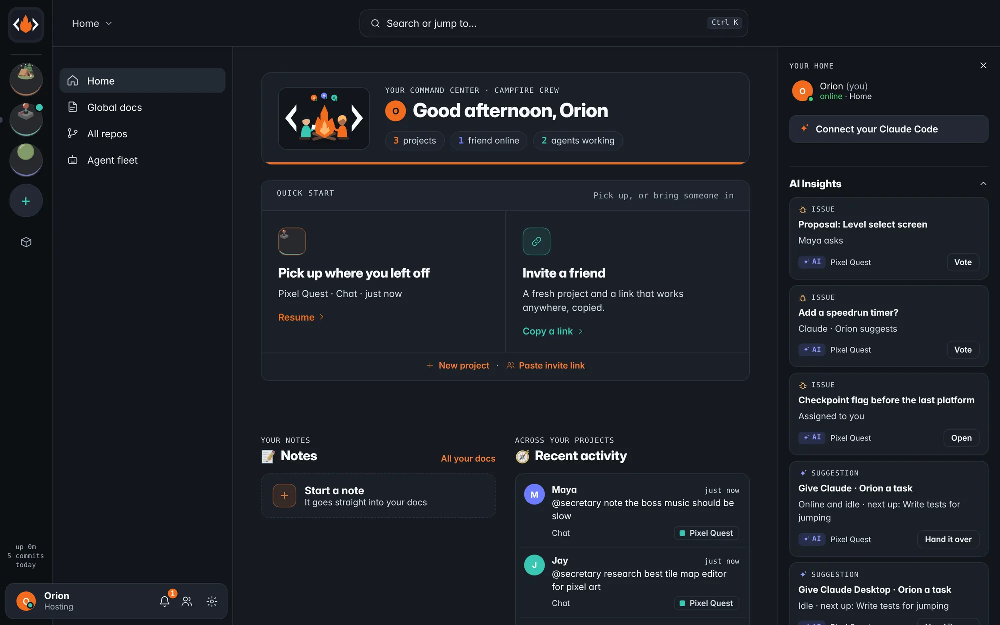

HOME
Your command center.
The app opens at Home: what to do next across every project, Ask your Claude or the local model, join with a link or start a project, a scratchpad that cleans itself up, and what changed while you were away.
- Invite a friend in one tap: a fresh project and a link, copied
- AI Insights: your next steps plus what the host notices
- Self-heal: a stuck start clears its caches and reloads
- The Explorer bot clicks through every screen before a release
